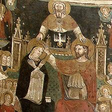

THE most popular form of
idolatry that ever captivated the human heart is the worship of Mary. To the
unwedded priest of contemplative mind, Mary has every beauty, every
charm, every divine grace. Pure enough to be the chosen mother of that human
body in which Deity dwelt, unapproached in her unparalleled honors, chaste as
the unspotted snow; she is the queen of his imagination, the ravishing idol of
his heart. And as the mistress of his affections, he sings her praises,
proclaims her glories, and gives her glowing homage. Those who fail to worship
Mary, in his sight, are destitute of moral taste and perception; they are
blind to beauty; they are governed by heartless ingratitude; they have no ear
for the sweetest voice that ever fell on the ears of angels, or sent its
thrilling melodies through the wounds of a bleeding heart.
To the masses of the Catholic world, Jehovah does not appear
as a pitying Father, governed by a compassion too vast for finite conception,
a love which led him to give up his only Son to the nails, the crucifix, the
spear, the burning wrath of indignant justice, the ghastly arms of the
universal destroyer, and to the loathsome grave, that "he might redeem us from
the curse of the law, being made a curse for us." He is the awful God who
breathes thunders; whose eyes flash forth lightnings; whose feet, as they
touch our world, start the jarring earthquakes; whose voice is like the
roarings of many cataracts; who is holy, terribly just, sparing neither age
nor sex, and never appalled by the numbers who fall before his avenging
righteousness. Jesus is not the God-man. He is simply Jehovah, without
anything to make him our brother, to proclaim his intense and eternal
human sympathies. The only conception the Catholic masses have of Christ's
humanity is a
[pg. 313]
little child sitting in helpless and unconscious innocence on
the knees of a loving mother; to them Jesus is the infinite God, moving
through the universe as its master, to inflict punishment; and to be coaxed
into acts of mercy by a mother whom he loves.
They view Mary as the personification of maidenly modesty, of
motherly love, of all beauty, goodness, and gentleness. There is not a pure
and loving quality known to the human imagination which is not attributed to
Mary. She has pity in ocean fullness; she is ever ready to intercede for her
penitent petitioners; she has unlimited sway over the heart of her Son. She is
the queen of love, of goodness, and of heaven. She is the most venerated
divinity in the Catholic Church. Little wonder that Mohammed should say: *
"Believe therefore, in God and his apostles, and say not there are three Gods,
forbear this; it will be better for you." His commentator tells us the three
Gods of whom he spoke were the Father, the Son and the Virgin Mary.
The Worship of Mary began in Arabia. †
About the end of the fourth century
certain women in Arabia, once in twelve months, dressed a car[t] or square
throne; spread a linen cloth over it; and on a clear day placed a loaf of
bread or cakes called collyrides upon it, which they offered to the Virgin
Mary. It would seem that this was a transfer of the services of the Lord's
Supper to Mary from her Son. These first worshippers of Mary were called
Collyridianians. This service, though offensive to the churches at first,
under another and milder form spread rapidly over the East and West. ‡
...
* Koran, p. 80 Philada., 1868.
† Mosheim, iv. cen. chap. v. sec. XXV.
‡ Neander, ii. 339.
[pg. 319]
...
Litany of the Blessed Virgin.
This Litany was composed in Loretto, and
sung in the processions in that city; and on that account it is often called,
"The Litany of Loretto." Sixtus V., June 11th, 1587, granted to all Christians
an indulgence of two hundred days for each time this Litany was piously
repeated. This indulgence was confirmed by Benedict XIII., January 20th, 1728.
†
The portion of it about Mary is blasphemous in the highest
degree; it is the most idolatrous prayer ever presented to a dead woman.
"Holy Mary, ‡ pray for us.
Holy Mother of God, pray for us.
Holy Virgin of Virgins, pray for us.
Mother of Christ, pray for us.
Mother of Divine Grace, pray for us.
Mother most pure, pray for us.
Mother most chaste, pray for us.
Mother most inviolate, pray for us.
Mother undefiled, pray for us.
Mother most amiable, pray for us.
Mother most admirable, pray for us.
Mother of our Creator, pray for us.
Mother of our Redeemer, pray for us.
Virgin most prudent, pray for us.
Virgin most venerable, pray for us.
Virgin most renowned, pray for us.
Virgin most powerful, pray for us.
Virgin most merciful, pray for us.
Virgin most faithful, pray for us.
Mirror of Justice, pray for us.
Seat of Wisdom, pray for us.
Cause of our Joy, pray for us.
Spiritual Vessel, pray for us.
...
‡ "The Garden of the Soul," p. 297-8. London.
[pg. 320]
Vessel of Honor, pray for us.
Vessel of singular Devotion, pray for us.
Mystical Rose, pray for us.
Tower of David, pray for us.
Tower of Ivory, pray for us.
House of Gold, pray for us.
Ark of the Covenant, pray for us.
Gate of Heaven, pray for us.
Morning Star, pray for us.
Health of the Weak, pray for us.
Refuge of the Sinners, pray for us.
Comforter of the Afflicted, pray for us.
Help of Christians, pray for us.
Queen of Angels, pray for us.
Queen of Patriarchs, pray for us.
Queen of Prophets, pray for us.
Queen of Apostles, pray for us.
Queen of Martyrs, pray for us.
Queen of Confessors, pray for us.
Queen of Virgins, pray for us.
Queen of All Saints, pray for us.
Language is exhausted in applying titles to
Mary, pilfered from her divine Son. Not in any tongue used by mortals has such
a list of impious compliments been given to a woman living or dead. Nor has
any religion or superstition ever showered such praises upon a female
divinity. Every sentence is but the prayer:
"Come, then, our advocate,
O turn on us those pitying eyes of
thine;
And our long exile past,
Show us at last
Jesus, of thy pure womb the fruit
divine;
O Virgin Mary, mother blest!
O sweetest, gentlest, holiest!"
Mary and Eve, the Authors of Sin and Salvation
The Rev. M. Hobart Seymour, an Episcopal
clergyman, spent some time in Rome at the period when Puseyism [Edward
Bouverie Pusey, (1800 - 1882)] threatened to
[pg. 321]
carry the Church of England into the arms of the "Scarlet
Lady;" and as it was assumed in Rome that he was there to join the Church of
the Dark Ages, provided some difficulties were explained, certain Professors
of the Collegio Romano, of the order of Jesuits, visited him repeatedly to
remove his objections. One of these Jesuits declared to him, * "That as it was
a woman brought in sin, so a woman was to bring in holiness; that as a woman
brought in death, so a woman was to bring in life; that as Eve brought in
dissolution, so Mary was to bring in salvation; that as we regard Eve as the
first sinner, so we are to regard Mary as the first Saviour; the one as
the author of sin, the other as the author of its remedy."
The Virgin More Merciful than her Son.
One of these professors declared that the
"feeling was universal among Romanists that the Virgin Mary was more merciful,
more gentle, and more ready to hear than Christ." † On another page the same
doctrine is taught by one of these Jesuits: "It is the opinion of many of the
fathers that God hears our prayers more quickly when they are offered through
the blessed Virgin than when they are offered through anyone else." And again:
"Many of the fathers were of the opinion that even Christ himself was not so
willing to hear our prayers, and did not hear them so quickly, when offered
simply to himself, as when they were offered through the blessed Virgin." And
again, the professor says: "The Romanists feel Mary is altogether of their own
nature, and that this insures a more perfect sympathy, so as to make Mary more
accessible than Christ; and this feeling leads them to pray with more
frequency, as well as with more confidence to Mary than to Christ."
The Two Ladders to Heaven.
St. Bernard had a vision once, in which he
beheld two ladders extending from earth to heaven.
‡ At the top of one ladder the Saviour appeared; and Mary at the top of the
other; those try-
* [Rev. M. Hobart] Seymour's "Mornings among the Jesuits [at
Rome]," p. 44. N. Y., 1849.
† Id., pp 48, 49, 102, 106.
‡ Id., p. 56.
[pg. 322]
ing to enter heaven by Christ's ladder were constantly
tumbling down, and meeting with perpetual failures; those who attempted to
reach the skies by Mary's always succeeded, for she put forth her hands to
assist them. Seymour says: * "I saw this as an altar-piece (a picture of it)
in a church at Milan—none succeeding by the Saviour's ladder, none failing by
the Virgin's."
The Triangular Trinity.

In the
Baptistery of Parma
[Italy] there is a representation of the Trinity. At the top of a triangle is
the Father; at the two angles of the base are the Son and Mary; the two arms
of the Father resting on the heads of the Son and Mary, form the legs of the
triangle; while the arms of the Son, extended to the head of Mary, form the
base. The Sacristan called it the Trinity of the Father, Son and Virgin. †
Four Persons in the Godhead.
Seymour quotes from Meyrick's "Working of
the Church in Spain," the form of doxology admired in that country: ‡
"Glory be to the Father,
Glory be to the Son,
Glory be to the Holy Ghost,
Glory be to the Holy Virgin,
Throughout all ages, forever and ever.
Amen."
The Chief Source of St. Mary's Merits.
To have had such a Son as Jesus is the
common basis of Mary's claim to the peculiar respect of our race; but the
Jesuits of the Collegio Romano have discovered another foundation for these
merits. "Assuredly," says one of them, "there was merit in the sufferings
undergone by the blessed Virgin in giving birth to the child Jesus. There was
no necessity whatever; no reason whatever why she should have subjected
herself to them; and therefore her having
* "Mornings among the Jesuits," p. 56. N. Y., 1849.
† [Rev. M. Hobart] Seymour's "Evenings with the Romanists," [Robert
Carter and Bros.] p. 258. N.Y., 1856.
‡ Id., p. 256.
[pg. 323]
actually undergone such sufferings, was meritorious. * She had
some claim upon God for it." Here the doctrine is that maternity inflicted on
Mary without her consent gave merit to her enforced sufferings. If so, then
every case of compelled maternity has overflowing merit to blot out the sins
of others, even when the mother is a heathen.
The Religion of Italy, the Gospel of Mary, not the
Dispensation
of Jesus.
The intelligent observer already quoted
confirms the universal testimony of travellers who have visited Italy about
the extent of Mary worship. He says: † "The whole devotional system of the
Church of Rome, the prayers of the Virgin, the countless images of the Virgin,
the many churches dedicated to the Virgin, the universal devotion rendered to
the Virgin, the manner in which all the services and prayers of the church and
people are impregnated with thoughts of the Virgin, the extent to which, in
conversation, all classes went, in speaking of the Virgin, all had impressed
me with the feeling that the religion of Italy ought to be called: The
religion of the Virgin Mary, and not the religion of Jesus Christ."
"If I enter the church of the Augustines, I see there an
image of the Virgin Mary as large as life. Some are decking her with jewels as
votive offerings; some are suspending pictures around as memorials of
thankfulness; some are placing money in a box at her feet; some are
devoutly kissing her feet and touching them with their foreheads; some are
prostrate in profound devotion before her; some are repeating the rosary
before her; all are turning their backs upon the consecrated host; upon that
which the priest is elevating upon the high altar, and which he and they
devoutly believe to be Jesus Christ Himself bodily and visibly among them;
turning their backs upon Christ and their faces upon Mary, practically
forsaking Christ for Mary, with a prostration the most profound before her
image—a prostration that was never surpassed in the days of heathen Rome, and
can never be justified in Christian Rome." ‡
* "Mornings among the Jesuits," p. 192. N. Y., 1849.
† Id., p. 107.
‡ Id., p. 55-6.
[pg. 324]
And one of these Jesuits told Mr. and Mrs.
Seymour, * "That the devotion to the Virgin was very popular; that latterly it
had become increasingly so, and that he knew many facts that proved it a
growing devotion among all classes. He mentioned the frequency with which he
hears the poor and simple people praying to the Virgin, singing hymns to her
pictures, at the corners of the streets early in the morning, appealing to her
for protection in times of danger; and he narrated an instance of a little
child appealing to the Virgin whose piety so touched his heart that a tear
glistened in his eye as the told the incident."
This Devotion rests upon the highest Authority.
The Council of Trent gave birth to modern
Romanism; its decisions have greater weight in the Papal Church than passages
of Scripture. The fathers of Trent had two classes of decrees to which they
gave their sanction, the first originated with themselves, the second was made
up of bulls, and commandments of other and commonly inferior synods. The
Council of Trent in its fifth session, in its articles on "Original
Sin," adopted the following from a decree of Sixtus IV.: † "When we
investigate with the scrutiny of devout consideration the exalted insignia of
the merits with which the Queen of the heavens, the glorious Virgin mother of
God, advanced to the celestial dwellings, shining amidst the constellations as
the morning star, and revolve beneath the secrets of our breast, that she
herself as the path of mercy, the mother of grace, and the friend
of piety, the consoler of the human race, the sedulous and vigilant
advocate of the salvation of the faithful, who are opposed by the load of
their offenses, intercedes with the King whom she has brought forth . . . .
that thereby they may
* "Mornings among the Jesuits," p. 55-6. N. Y., 1849.
† Canones et Decrete Conc. Trid., p. 260. Lipsiae, 1863.
[pg. 325]
become more fit for divine grace by the merits and
intercession of the same Virgin." Here Mary is the path of mercy, the
mother of grace, the consoler of the human race, with merits and intercession
to qualify men for divine grace; and that, by the decree of the authoritative
Council of Trent.
The Catechism of the Council of Trent,
Speaks with equal significance: * "Therefore, we, exiled sons
of Eve, who inhabit this vale of tears, ought assiduously to invoke the
Mother of Mercy, and the advocate of the faithful people, that she might
pray for us sinners, and that from her, in prayer, we might implore aid and
assistance; for no one, unless impiously and wickedly, can doubt but that
she has the most surpassing merits with God, and the highest desire to
assist the human race."
Gregory XVI., in 1832,
Says, in his Encyclical Letter [MIRARI VOS], published August
15th of that year: † "But that all things may have a prosperous and happy
issue, let us raise our eyes and hands to the most holy Virgin Mary, who only
destroys all heresies, who is our greatest hope; yea, the entire
ground of our hope."
Such is the position occupied by that modest, unassuming
woman, who gave birth to Jesus, in the Church of Rome. She is adored with a
worship of the loftiest order; she is venerated by many millions who neglect
her Son and his Father. She is at this moment the great divinity of the papal
world. Nor is there a doubt by that she would denounce this impious idolatry
if she were on earth, and drive her images and worshippers from every
Christian temple.
* Catechismus Conc. Trid., pars iv. cap. vi. quest. 8,
p. 405. Lipsiae, 1865. [link]
† [Charles] Elliott's [On Romanism:] Delineations of Roman [Catholic]ism.
p. 754. London, 1851.
[pg. 326]
Not one Prayer was ever addressed to Mary when living,
nor was
any Worship ever offered her.
While her Son lived on earth, she was
respected by his followers, simply as the mother of the Baptist, or any other
godly woman was esteemed. After his death, there is nothing in the sacred
records about her; nor is there one single instance, in the New Testament,
of reverence, veneration, dulia, hyperdulia, or latria given to Mary.
Romish prayer-books are full of petitions to the Virgin; the Scriptures are
absolutely silent about any supplications to and worship of the Saviour's
mother.
The Lord rebukes his Mother for interfering with his
Business.
At the marriage of Cana, when the wine
failed, Mary, concerned for the honor of the family, told Jesus, and
undoubtedly hinted to him the propriety of performing a miracle. According to
the Vulgate, the only Bible recognized by the Council of Trent, the Saviour
answered: * What is it to me and thee, woman? my hour is not yet come." The
use of the word "woman" by the Saviour, does not lead one to think that he
regarded her as "queen of heaven." His answer to her is a refusal, coupled
with an intimation that she was ignorant of the time when he should assume his
divine authority before men.
The Saviour decides that every one who does his Father's
Will is the
equal of his Mother.
On one occasion, it was announced to Jesus,
that his mother and brethren were without, and wished to speak to him: the
Saviour's reply, according to the Vulgate, was: † "Who is my mother, and who
are my brothers? and, extending his hand to his disciples, he said: Behold my
mother and my brothers; for whosoever shall do
* John ii. 4, Vulg., edita et recognita jussu Sixt. V.
et Clem. VIII. London, 1846.
† Matt. xii. 48, 49, 50, Vulg., edita et recognita jussu Sixt. V. et
Clem. VIII. London, 1846.
[pg. 327]
the will of my Father, who is in heavens, he is my brother
and sister and mother." He refuses to go and speak with the "refuge of
sinners, the comfortress of the afflicted," and he makes the declinature
publicly, as if to show that even his mother must not interfere with him in
discharging the duties he owes his Father. And he immediately rebukes the idea
that his mother was any more to him, as the Great Teacher, than any other
disciple; whosoever does his Father's will is dear to him, and powerful with
him, as "brother, sister and mother."
The Saviour declares that there is a greater Distinction
on earth
than that of being his Mother.
On one occasion, while he was speaking, a
delighted woman, most probably a mother, exclaimed, according to the Vulgate:
* "Blessed is the womb which bare thee, and the breasts which thou hast
sucked; and he said: Nay, rather, they are blessed who hear the word of God,
and keep it." This woman properly pronounced Mary blessed for giving birth to
the Redeemer. But the Saviour, while admitting that Mary had a blessing in
being his mother, declares that the hearing and keeping of the word of God was
a greater honor—a happier distinction. And if the inferior honor justifies the
worship of Mary, on the same principle higher worship should be given to all
who hear God's word and keep it. But we very much fear that if this rule was
observed, most of the present Catholic saints would be discarded, and millions
of godly persons, who were never inside a Romish Church, would have their
images put in Catholic shrines, and prayers and devotions presented to them—because
they heard GOD'S WORD AND KEPT IT, instead of observing the traditions of men.
A woman so deaf that she can hear nothing, has a powerful
son, persons are ignorant of her deafness, and anxious for the favor of the
mighty son; they seek the intercession of his deaf mother. But though they
plead earnestly, they appeal to her in vain; she cannot hear them. In regard
to all earthly prayers and devotions, Mary is a deaf woman; she cannot
hear. She knows nothing of all the words addressed to her.
* Luke xi. 27, 28, Vulgate. London. 1846.
The Franciscan Chronicles relate that a certain Brother Leo saw in a
vision two ladders, the one red, the other white.
On the upper end of the red ladder stood Jesus and on the other stood His
holy Mother. The Brother saw that some tried to climb the red ladder; but
scarcely had they mounted some rungs when they fell back, they tried again
but with no better success. Then they were advised to try the white ladder
and to their surprise they succeeded, for the Blessed Virgin stretched out
Her hand and with Her aid they reached Heaven.44
NOTE: This apparition is by no means incredible; nor is it right to say
that it makes the power of Mary superior to that of Christ. The symbolic
significance of the vision must be borne in mind. The idea has been
expressed repeatedly in the words of St. Bernard, and more recently by Popes
Leo XIII and Benedict XV: "As we have no access to the Father except through
the Son, so no one can come to the Son except by the Mother. As the Son is
all-powerful by nature, the Mother is all-powerful in so far that by the
merciful disposition of God She is our mediatrix of graces with Christ.
Therefore says Eadmer: "Frequently our petitions are heeded sooner when we
address ourselves to Mary the Queen of Mercy and Compassion than when we go
directly to Jesus who as King of Justice is our Judge." 45
(44.) Wadding, Ann. 1232 n. 28. [See also The Glories
of Mary, St. Alphonsus Liguori, translated from the Italian, Second
Edition, Chapter VIII, Section III. Mary leads her Servants to Heaven,
published by Burns, Oates & Washbourne LTD, London, 1868, pgs. 213-214.]
(45.) De Excell. V. c. 6.
Source: Fatima
Network website
The White Ladder
Devotion to Mary is that white ladder seen in a celebrated vision by
Brother Leo of the early Franciscans. In this vision the holy friar saw an
immense field, and in it there were so many friars of the Order that to get
them all within view the throng had to extend upward. Two ladders so
appeared, rising into the sky, one of them red and one of them white. At the
top of the red one St. Francis was seen alongside Jesus, and he invited the
friars to mount up. The friars faithfully undertook the climb, but
afterwards fell back, some from the first rung, others from the second rung,
and others from the third. Even the few who seemed to reach the top rung
with great labor fell back down. Then the Seraphic Father encouraged his
sons, "Hasten over there to the white ladder." And there, in all Her beauty,
the Immaculate Virgin was inviting Her protégés to climb up to Her. Then -
how wonderful to see it! - they all nimbly climbed the white ladder the
whole way to the top! It is all-important to realize then that true devotion
to the Madonna is the most perfect way to Jesus - the most beautiful way.
Source: Fatima
Network website
Our Lady assures us of our salvation with our own cooperation in using
the means given to us: prayer, the sacraments, mortifications, good works,
and particularly Marian devotion. Even St. Francis of Assisi in the famous
vision of Friar Leo on the white ladder and the red ladder assures us that
devotion to Our Lady is a guarantee for salvation. Thus, those who were
saved on the white ladder at whose peak was the Blessed Virgin entered
heaven; those on the red ladder --what a loss!
Source: Fatima
Network website
VATICAN INFORMATION SERVICE
SEVENTH YEAR - N.82
ENGLISH
WEDNESDAY, MAY 7, 1997
SUMMARY:
- GENERAL AUDIENCE: MARY, MOTHER OF ALL THE REDEEMED
- POPE TALKS OF CONVENTION ON BANNING CHEMICAL WEAPONS
- STATISTICS ON THE CHURCH IN LEBANON
- OTHER PONTIFICAL ACTS
- NOTICE
---------------
GENERAL AUDIENCE: MARY, MOTHER OF ALL THE REDEEMED
VATICAN CITY, MAY 7, 1997 (VIS) - The Holy Father dedicated today's
general audience to the Virgin Mary, and commented on the words that Jesus
spoke from the Cross to St. John: "'Behold your mother', ... with which he
reveals to the Blessed Virgin the pinnacle of her motherhood."
John Paul II expressed his wish that all might discover in these words of
Jesus "the invitation to accept Mary as their mother, responding as true
children to her motherly love."
At the moment that Jesus entrusts his mother to St. John,
"it is possible to understand the authentic meaning
of Marian worship in the ecclesial community ... which furthermore is based
on the will of Christ."
"The words 'Behold your mother'," continued the Holy Father, "express
Jesus's intention to awaken in his disciples an attitude of love and trust
toward Mary, leading them to recognize in her their mother, the mother of
all believers. In the Blessed Virgin's school, the disciples learn, as John
does, to know the Lord deeply" and to love him.
John Paul II underlined that "the history of Christian piety teaches that
Mary is the path that leads to Christ, and that filial devotion to her does
not at all diminish intimacy with Jesus, but rather, it increases it and
leads it to very high levels of perfection."
The Pope remarked that when the Gospel says that St. John welcomed Mary
into his house, this "seems to show his initiative, full of respect and
love, ... to live the spiritual life in communion with her."
He concluded by asking all Christians "to make room (for Mary) in their
daily lives, acknowledging her providential role in the path of salvation."
In his greetings in different languages at the end of the audience, the
Holy Father reminded the Slovak pilgrims that tomorrow is the liturgical
solemnity of the Ascension of the Lord: "The eternal Son of God, who lived
for 33 years on Earth to be our Master and Redeemer, went up to heaven to
prepare a place for us."
AG/MARY/... VIS 970507 (350)
Source:
Catholic
Information Network
Prayer to the Blessed
Virgin
Most Holy and Immaculate Virgin! O my Mother! Thou who art the Mother of
my Lord, the Queen of the world, the advocate, hope, and refuge of sinners!
I, the most wretched among them, now come to thee. I worship thee, great
Queen, and give thee thanks for the many favors thou hast bestowed on my in
the past; most of all do I thank thee for having saved me from hell, which I
had so often deserved. I love thee, Lady most worthy of all love, and, by
the love which I bear thee, I promise ever in the future to serve thee, and
to do what in me lies to win others to thy love. In thee I put all my trust,
all my hope of salvation. Receive me as thy servant, and cover me with the
mantle of thy protection, thou who art the Mother of mercy! And since thou
hast so much power with God, deliver me from all temptations, or at least
obtain for me the grace ever to overcome them. From thee I ask a true love
of Jesus Christ, and the grace of a happy death. O my Mother! By thy love
for God I beseech thee to be at all times my helper, but above all at the
last moment of my life. Leave me not until thou seest me safe in heaven,
there for endless ages to bless thee and sing thy praises. Such is my hope.
Amen.― (Prayer of St. Alphonse Liguori, 3 yrs indulgence, Raccolta, 342)
Source: With Mary to Jesus: a collection of Marian prayers,
by Fr. Theodore Anthony Zaremba. O.F.M., Franciscan Printery,
Pulaski, Wis.,1954.
The introduction says: "The indulgenced
prayers contained herein are from the latest official edition of the
Enchiridion Indulgentiarum (Raccolta), a compilation of prayers and devotions
enriched with indulgences by the authority of the Holy See."
18. It is therefore, a pleasure for
us, a full century having passed since the Pontiff of immortal memory, Pius IX,
solemnly proclaimed this singular privilege of the Virgin Mother of God, to
summarize the whole doctrinal position and conclude in these words of the same
Pontiff, asserting that this doctrine "vouched for in Sacred Scripture according
to the interpretation of the Fathers, is handed down by them in so many of their
important writings, is expressed and celebrated in so many illustrious monuments
of renowned antiquity, and proposed and confirmed by the greatest and highest
decision of the Church" (Bull Ineffabilis Deus), so that to pastors and
faithful there is nothing "more sweet,
nothing dearer than to worship, venerate, invoke and praise with ardent
affection the Mother of God conceived without stain of original sin. (Ibidem.)
33. But where - as is the case in
almost all dioceses, there exists a church in which
the Virgin Mother of God is worshipped
with more intense devotion, thither on stated days let pilgrims flock
together in great numbers and publicly and in the open give glorious expression
to their common Faith and their common love toward the Virgin Most Holy. ...
34. But let this holy
city of Rome be the first to give the example, this city which from the earliest
Christian era worshipped the heavenly mother, its patroness, with a special
devotion. As all know, there are many sacred edifices here, in which she is
proposed for the devotion of the Roman people; but the greatest without doubt is
the Liberian Basilica [St. Mary Major], in which the mosaics of Our predecessor of pious memory, Sixtus III, still glisten, an outstanding monument to the Divine maternity of
the Virgin Mary, and in which the "salvation of the Roman people" (Salus
Populi Romani) benignly smiles.
Source:
 FULGENS CORONA,
FULGENS CORONA,
Encyclical
Of Pope PIUS XII, September 8th, 1953.